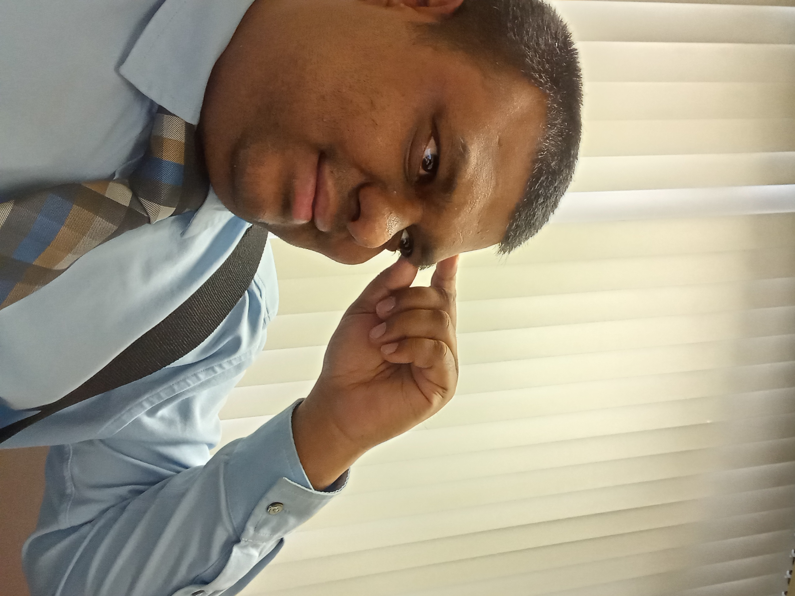

Welcome to the AI Research Group
Our research focuses on Artificial Intelligence, Deep Learning, Natural Language Processing, and Data Science, with applications in healthcare, scientific discovery, and autonomous systems. We are also interested in exploring agentic AI systems, which have the capability to learn, adapt, and make autonomous decisions. Our goal is to develop innovative, scalable, and interpretable AI solutions that address real-world challenges while advancing the theoretical foundations of machine learning.


Principal Investigator
Dr. Aniruddha Maiti
Assistant Professor, West Virginia State University
Verified Email: wvstateu.edu
Research Areas
- Deep Learning & NLP
- Knowledge Distillation
- AI in Medical Applications
- Data Science & Multi-Modal Learning
Current Research Projects
Knowledge Distillation
Student: Samuel Adewumi (IBM Masters Fellow)
This project explores various loss functions (token-level, feature-level, and patch-level) for training student models using PyTorch.
The study focuses on knowledge transfer from a teacher Vision Transformer (ViT-Small) to student models with 2-10 million parameters.
Minimal Fine-Tuning for Multi-Modal Deep Learning
Student: Renata Castellanos
Supported by: NASA Space Grant Research Enhancement Award
This project focuses on building a low-resource pipeline for fine-tuning pretrained deep learning models on point cloud and image data using limited GPU resources.
The aim is to make AI research more accessible for undergraduate students by enabling multi-modal learning on personal laptops.
Evaluating Structured Intermediate Representations (JSON) in NLP
Collaboration: Dr. Sridhar Acharya Malkaram Students: Temesgen Alema Tikure & Zichun Wang
This study investigates how structured representations impact text-to-vector transformations using 7B -13B Language Models.